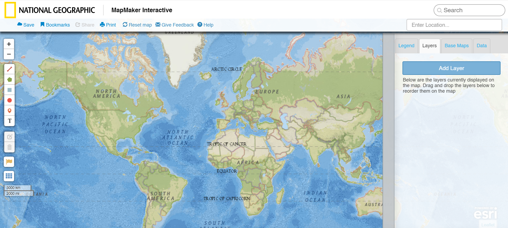

In searching for platforms to comparatively analyze, I found this video educating about the spanish black legend. While it is not inherently interactive, I found this video very helpful in looking at how it targets its audience. The video is engaging both in the narrative, but in the graphics and graphic style it depicts. The audience is clearly someone who is seeking out the education, but nonetheless the video makes an effort to be very engaging. Overall, I find this video a very important piece of reference to keep in mind as it keeps a light tone to a dark subject, which in turn makes the piece more effective in conveying its message. In looking forward to my project, I think I would like to keep a similar light heartedness. If you make a message campaign too dark and gritty, the audience may be inclined to look away or may not be completely engaged. This video shows how to effectively captivate and market towards your audience in order to effectively educate them.
This screenshot is of an interactive map from National Geographic’s website. The map is interesting to analyze as it shows the very basic usage of an interactive map and is very barebones. In thinking of my final project, I think content wise, an interactive map depicting the spanish black legend and its relationships throughout world history would be a fun piece. I would create an interactive map that users could click though and interactive though, possibly. In analyzing this map, I can see a starting point in terms of layout and ways to interact with a map. This map has buttons on the left side, left for users to interact with the map. They can draw shapes, pin locations etc. On the right users can view information and save information. This is a great starting place to see what considerations were taken in place when this map was created and it will help me take my map quite further and into a more complicated route.